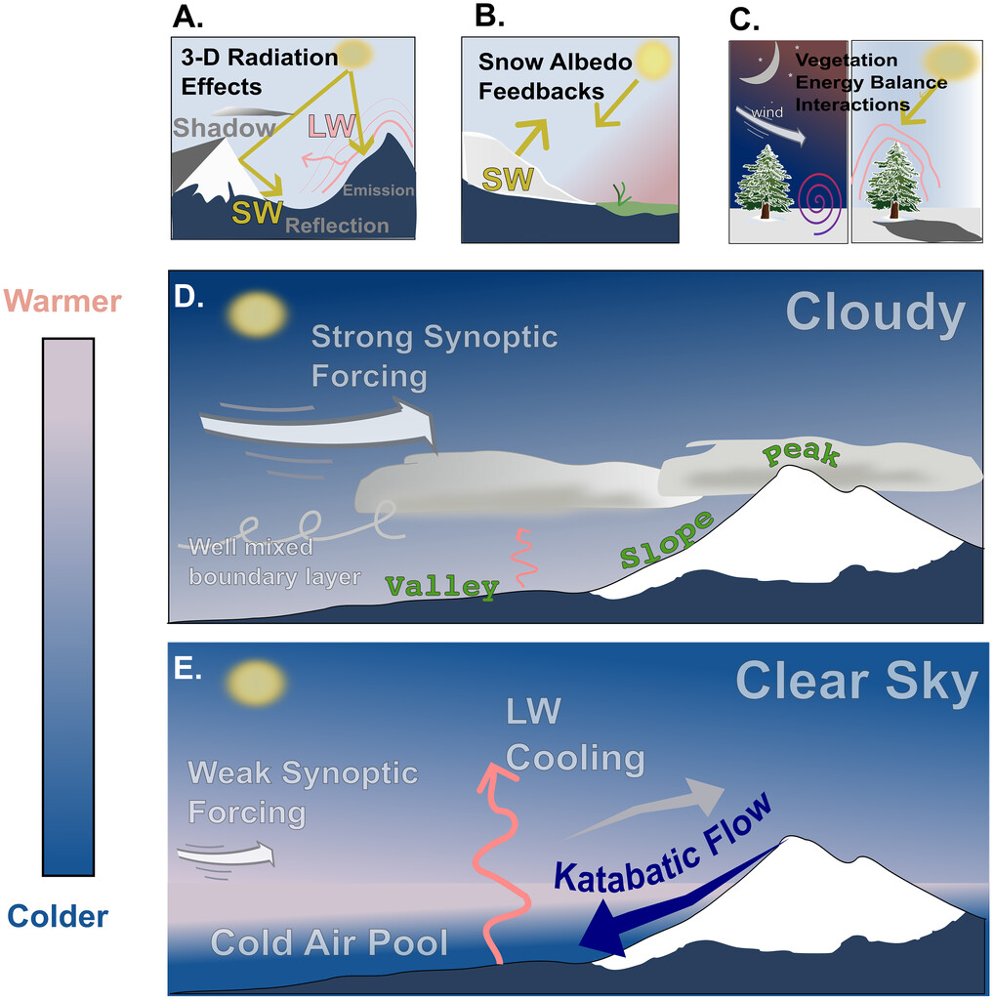
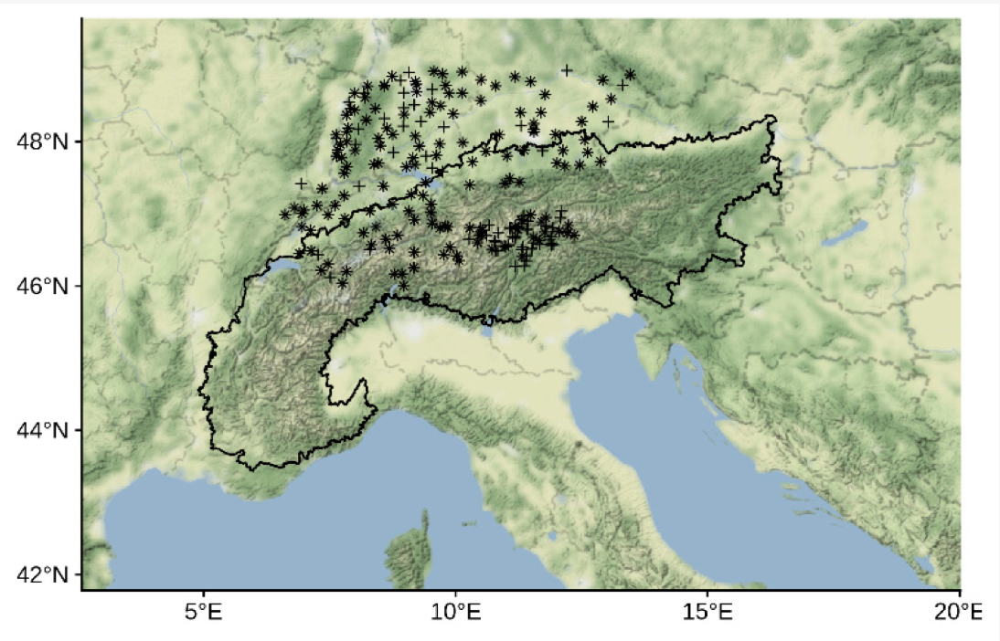
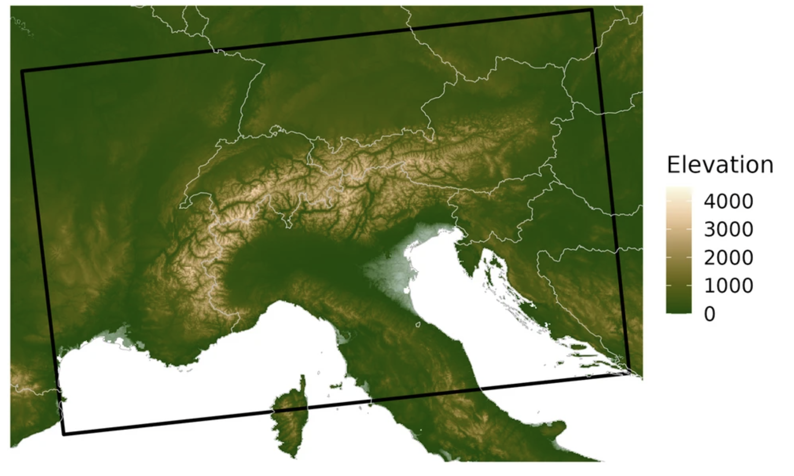
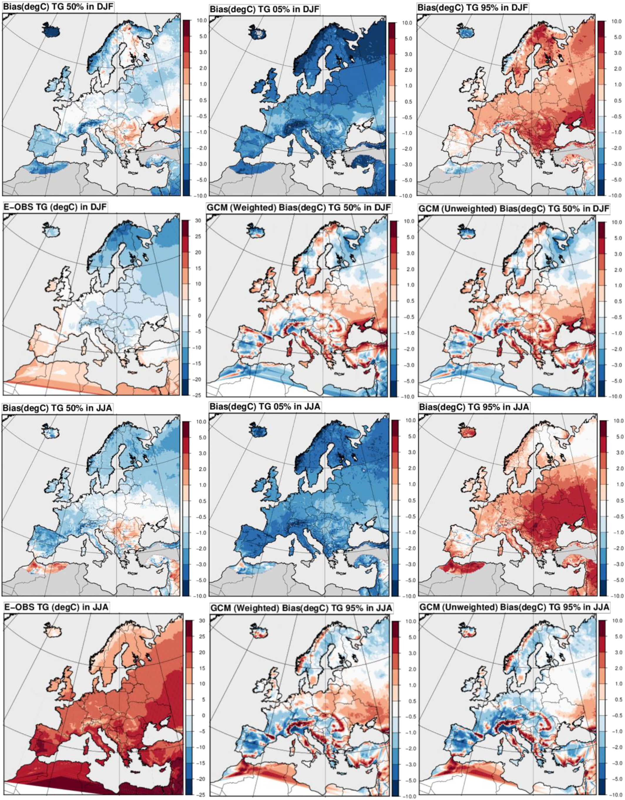
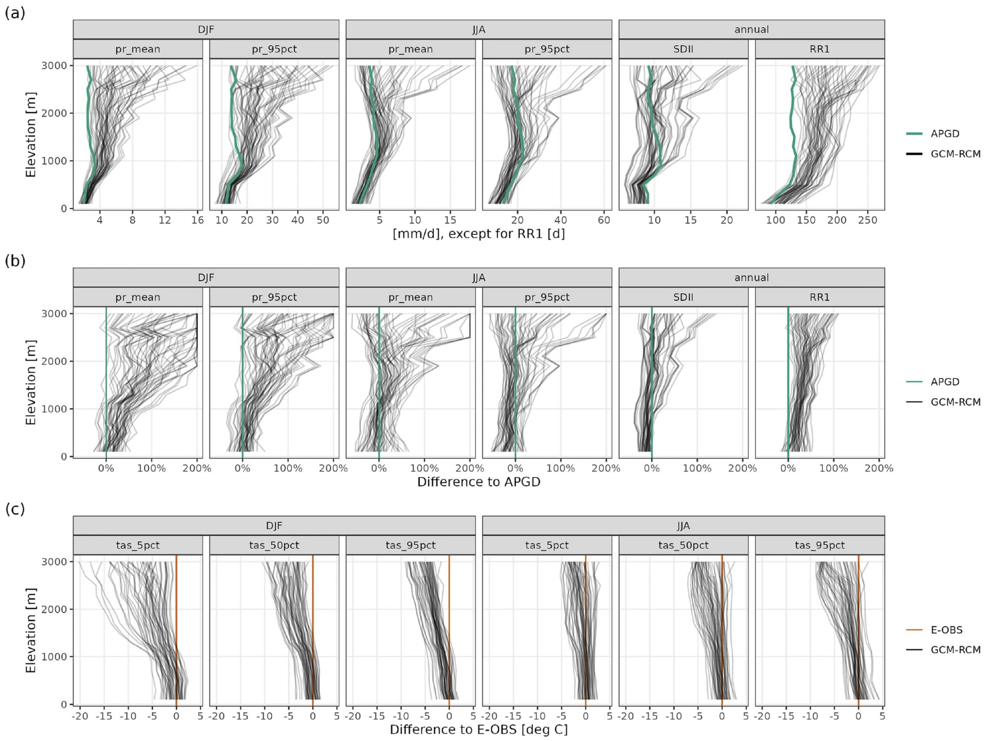
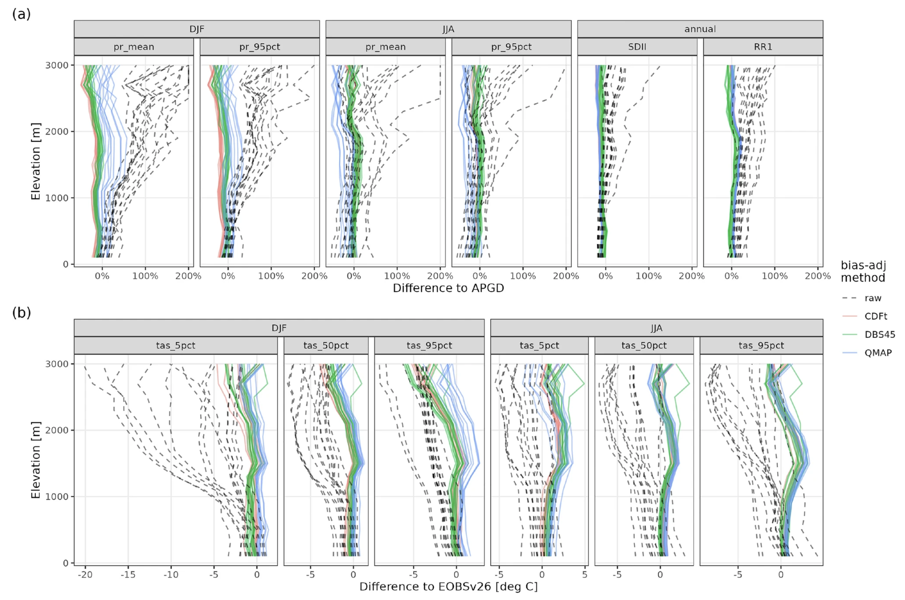

5.2.1. Assessment of CORDEX temperature biases over the Alpine region for the ski and hydrological sectors.#
Production date: 31-03-2025
Produced by: CMCC foundation - Euro-Mediterranean Center on Climate Change. Daniele Peano.
🌍 Use case: Investigating climate biases in mountain regions to inform the ski and hydrological sectors.#
❓ Quality assessment question#
Are atmospheric models too cold in the mountain regions? Are CORDEX RCMs able to correctly capture climatology over orographically complex domains such as Alpine regions?
Despite mountain areas covering a limited amount of land, they play a paramount role in the world’s water tower by supplying water for both natural and anthropogenic demands [1]. In many mountain regions, various water-related processes (such as the fraction of rain versus snow, snowmelt, and streamflow drought, e.g. [2]) are linked to temperature conditions, making the mountain areas an indicator of the ongoing climate change.
Mountain terrains complicate the proper representation of temperature by models in those areas due to complex topography, slopes, aspect, terrain shadowing, snow-albedo feedbacks, and vegetation variability (Figure .1, [2]).
Thanks to high resolution, Regional Climate Models (RCMs), are expected to improve the representation of dynamical and thermodynamic processes underlying temperature variability over complex orography. However, RCMs still present biases over mountain regions. These include cold biases during winter, particularly over peaks and ridges, and warm biases in summer, mainly in valley areas [3], [4], [5], [6], [7] and [2]. These temperature biases, consequently, impact their ability to properly represent snow-related processes in mountain areas [5]. In fact, biases in temperature and snowpack, have a crucial knock-on effect on surface runoff, undermining the evaluation of the water-supplying capability of mountain ranges in Europe [1]. Those cascading effects are crucial for lowlands water availability [8] and inherent economic sectors such as tourism, hydropower, and agriculture [9].
📢 Quality assessment statement#
These are the key outcomes of this assessment
State-of-the-art regional climate models exhibit cold biases in the winter season compared to both station/in-situ and gridded observations.
EURO-CORDEX RCMs show a winter cold bias over the Alpine region, and even the “hottest” models produce warm biases in the lowlands, while mountain areas remain colder than observations.
Winter cold biases introduce additional uncertainties in snow estimates, reducing confidence in the use of RCM temperature projections for applications in the ski industry.
Temperature and mountain snowpack biases affect estimates of water availability, influencing the ability to assess changes in various hydrological and economic sectors, such as tourism, hydropower, and agriculture.
The outcomes of this assessment, focused on the Alpine region, advocate caution when using RCM future temperature projections. A key concern is the potential propagation of present-climate biases into a warmer future climate, representing an aspect (the propagation) still largely unexplored.
{kind=link}

Fig. 5.2.1.1 Depiction of processes influencing mountain T2m (temperature at 2 metres above ground level). (a) Incident solar radiation at the ground surface depends on terrain aspect and shadowing. Mountain slopes can also reflect SW and emit LW radiation; (b) snow reflects solar radiation, cooling surface temperatures through the snow-albedo feedback; (c) vegetation’s high surface roughness and lower albedos warm surrounding air relative to non-vegetated snow surfaces; (d) moderate synoptic forcing leads to upper-air and boundary layer temperature mixing, with an un-inverted vs elevation profile; (e) katabatic flows develop valley temperature inversions during clear-sky, cloud-free conditions when surface LW cooling is strong. Image reproduced from Rudisill et al. (2024) - [2].#
📋 Methodology#
A review of the relevant scientific literature documenting state-of-the-art RCMs cold biases over mountainous regions, with a focus on the Alpine region, is conducted. Methods and key findings from a series of studies on this topic are presented and discussed.
The analysis and results follow the next outline:
1. Main methods within the literature
📈 Analysis and results#
1. Main methods within the literature#
The modelled temperatures are typically evaluated against gridded meteorological observations, reanalysis datasets, or in situ observations (i.e. data from individual weather stations). Usually, the assessments focus on the daily average, minimum (occurring at night), and maximum (occurring during the day) values (e.g., [2]).
[6] use the E-OBS17 0.22° dataset [10] as a reference to evaluate a set of 55 EURO-CORDEX regional climate models. The E-OBS datasets are interpolated onto a common 0.11° resolution grid using a bilinear interpolation to perform their evaluation. [5] use a similar approach in evaluating the temperature biases, which is based on the E-OBSv20 [11] gridded datasets. Differently from [6], [5] also assess the biases in snow as simulated by RCMs. The snow assessment uses both gridded data and data from stations distributed in the province of Bolzano, Germany, and Switzerland (Figure .2). Temperature values are also compared against the data retrieved from this set of stations.
[12] analysed EURO-CORDEX temperature and precipitation data for the Alpine region (Figure .3) across different elevations, comparing them with gridded observations from E-OBS and the Alpine Precipitation Grid Dataset (APGD; [13]). They also conducted an observational intercomparison using MESAN [14], WFDEI [15], and high-resolution national datasets.
{kind=link}

Fig. 5.2.1.2 Map of European Alps. Terrain map with boundaries of the Alpine Convention (Alpconv), marking the core Alpine region. Points indicate the station locations (+: used for reanalysis driven RCMs, x: used for GCM driven RCMs; stars (+ and x overlaid): used for both). (Map tiles by Stamen Design, under CC BY 3.0. Data by Open Street Map, under ODbL). Image reproduced from Matiu et al. (2019) - [5].#
{kind=link}

Fig. 5.2.1.3 Elevation map of the study area. The source is the European Digital Elevation Model (EU-DEM), version 1.1, which has been aggregated to 1 km. The black rectangle is the area for which the regional climate model data was cropped. Image reproduced from Matiu et al. (2024) - [12].#
2. RCMs temperature biases over Alps#
[6] assessed the performance of 55 combinations of Regional Climate Models driven by Global Climate Models, representing the full ensemble available for the European domain as of 2019, which, to our knowledge, remains unchanged. Figure .4 [6] presents the distribution of mean temperature biases for the winter and summer seasons. Of particular relevance to this quality assessment are the first and third rows, which depict the 5th percentile, median, and 95th percentile of the mean temperature bias among the 55 RCM simulations for winter and summer, respectively. Note that the percentile maps may not come from the same model in each grid point, with the 5th percentile likely showing negative biases and the 95th percentile showing positive ones. Unlike the summer season, during winter, even the 95th percentile of the mean temperature bias among the 55 RCM simulations shows cold biases over high mountain regions, such as Scandinavia and the Alps. This indicates that even the warmest models within the Euro-CORDEX ensemble still exhibit negative biases in mountain regions. Similar biases were also identified by [3] in the Alps, [16] in the Andes, and [7] in North America, emphasizing common RCMs’ issues in representing temperature in complex orography regions.
{kind=link}

Fig. 5.2.1.4 Distribution of temperature biases (°C) for the winter season (top two rows) and the summer season (bottom two rows). First row, left: median of the mean temperature bias among the 55 RCM simulations, middle: 5th percentile of the RCM temperature bias distribution, and right: 95th percentile of the RCM temperature bias distribution; second row, left: E-OBS mean observed temperature, middle: median of the biases of the eight GCMs used 55 times (including repetitions), and right: median of the eight GCMs biases without repetition; bottom two rows: same as top two rows for the summer season. Image reproduced from Vautard et al. (2020) - [6].#
Various potential sources have been suggested to explain these large cold biases in temperature across major mountain regions. A comprehensive list of possible mechanisms is presented by [2]. These latter found that possible causes could include the representation of snow and its thermodynamics, discrepancies in elevation and orography due to grid spacing, or biases in radiation and wind.
Other studies have explored specific factors contributing to these biases. For example, [17] remark a link between winter cold biases and snow-covered regions, highlighting a poor representation of snow-atmosphere interaction amplified by albedo feedback as a possible driver of the winter cold biases in RCMs. Moreover, the underestimation of cloud cover and consequent changes in incoming radiative fluxes (shortwave and longwave) may also influence temperature biases in Alpine areas [18].
Relevant studies have further explored elevation-dependent biases in regional climate models across mountain regions. Notably, [12] evaluated data from the EURO-CORDEX ensemble for the Alpine region and the domain specified in Figure .3, comparing it with multiple gridded observational datasets, including E-OBS, APGD, and high-resolution national datasets. Their study indicates that biases in seasonal temperature increase with elevation, while also highlighting that observational datasets themselves are not immune to biases, making the choice of dataset for evaluation critical (also see [19]). Figure .5c [12] presents the differences in temperature indices between EURO-CORDEX GCM-RCM combinations and E-OBS for various elevations, comparing summer and winter, with values based on the 1971–2000 period. The cold bias became more pronounced with lower temperatures, particularly in winter and with increasing elevation. Smaller biases were observed below 1000 m, while above this threshold and during winter, all considered RCMs exhibited a strong cold bias. This denotes mountain peaks and ridges as the areas characterised by the most substantial cold biases, as highlighted by [2].
{kind=link}

Fig. 5.2.1.5 (a) Precipitation indices in APGD and GCM-RCMs. (b) Differences between each GCM-RCM and APGD. (c) Differences in temperature indices between each GCM-RCM combination and E-OBS. Each line is one model combination. Values refer to the 1971–2000 climatology. Image reproduced from Matiu et al. (2024) - [12].#
Even though local-scale forcing misrepresentation plays a paramount role in driving the above-mentioned cold biases, also large-scale-forcing-related bias can both exacerbate or mitigate temperature bias in mountainous areas (e.g., [20] and [21]), especially in the winter season. In RCMs, these latter can be originated by inheriting large-scale misrepresentation introduced by the driving global climate model or internally generated by RCMs formulation.
In recent years several promising high-resolution modelling initiatives (considering both regional and global climate models) are paving the path to an improved understanding and improvement of this long-standing climate models bias [22], [23], [24], [25], [26] and [27].
3. Implications for the users#
The state-of-the-art regional climate models represent the principal tool to be implemented in estimating past, present, and future conditions of mountain areas, such as the Alps.
Based on the results of this assessment, the users need to be cautious when using the temperature projections provided by these tools. Bias-adjustment techniques can partially relieve the assessed cold temperature biases. In particular, this approach can reduce the present-day discrepancies between modelled and observed temperature fields ([12], Figure .6b). However, bias-adjustment methods produce debatable results for future projections, and users need to be cautious in employing their estimates. In particular, special consideration should be given to the representation of the physical relationship existing among different variables subjected to the bias adjustment [28] and to unphysical artefacts, like a damping or an amplification of the original simulation trends, especially warring in complex orography [29].
The assessed temperature and mountain snowpack biases influence the current regional climate models’ ability to quantify water availability in mountain areas and, consequently, the capability to estimate changes in resources for local and downstream hydrology and economic sectors, such as tourism, hydropower, and agriculture.
{kind=link}

Fig. 5.2.1.6 Impact of different bias adjustment methods on (a) precipitation indices and (b) temperature indices over 1971–2000. Each line is a GCM-RCM combination. Grey dashed lines are raw (uncorrected) models, while solid colored lines are bias-adjusted using different methods (see legend). Image reproduced from Matiu et al. (2024) - [12].#
ℹ️ If you want to know more#
Key resources#
Some key resources and further reading were linked throughout this assessment.
Regional climate models - CORDEX: https://cds.climate.copernicus.eu/datasets/projections-cordex-domains-single-levels?tab=overview
Gridded observation dataset for Europe, E-OBS: https://cds.climate.copernicus.eu/datasets/insitu-gridded-observations-europe?tab=overview
High-resolution global climate models: https://highresmip.org/
Special mention to:
C3S EQC custom functions,
c3s_eqc_automatic_quality_control, prepared by B-Open
References#
[1] Immerzeel, W.W., Lutz, A.F., Andrade, M. et al., 2020. Importance and vulnerability of the world’s water towers. Nature 577, 364–369. https://doi.org/10.1038/s41586-019-1822-y
[2] Rudisill, W., Rhoades, A., Xu, Z., and Feldman, D. R.,2024. Are Atmospheric Models Too Cold in the Mountains? The State of Science and Insights from the SAIL Field Campaign. Bull. Amer. Meteor. Soc., 105, E1237–E1264, https://doi.org/10.1175/BAMS-D-23-0082.1.
[3] Kotlarski, S., Keuler, K., Christensen, O. B., Colette, A., Déqué, M., Gobiet, A., Goergen, K., Jacob, D., Lüthi, D., van Meijgaard, E., Nikulin, G., Schär, C., Teichmann, C., Vautard, R., Warrach-Sagi, K., and Wulfmeyer, V., 2014. Regional climate modeling on European scales: a joint standard evaluation of the EURO-CORDEX RCM ensemble, Geosci. Model Dev., 7, 1297–1333, https://doi.org/10.5194/gmd-7-1297-2014.
[4] Winter, K.J.P.M., Kotlarski, S., Scherrer, S.C. et al., 2017. The Alpine snow-albedo feedback in regional climate models. Clim Dyn 48, 1109–1124. https://doi.org/10.1007/s00382-016-3130-7.
[5] Matiu, M., Petitta, M., Notarnicola, C., and Zebisch, M., 2019. Evaluating Snow in EURO-CORDEX Regional Climate Models with Observations for the European Alps: Biases and Their Relationship to Orography, Temperature, and Precipitation Mismatches. Atmosphere, 11(1), 46. https://doi.org/10.3390/atmos11010046.
[6] Vautard, R., Kadygrov, N., Iles, C., Boberg, F., Buonomo, E., Bülow, K., et al., 2021. Evaluation of the large EURO-CORDEX regional climate model ensemble. Journal of Geophysical Research: Atmospheres, 126, e2019JD032344. https://doi.org/10.1029/2019JD032344.
[7] Sy, S., Madonna, F., Serva, F., Diallo, I., and Quesada, B., 2024. Assessment of NA-CORDEX regional climate models, reanalysis and in situ gridded-observational data sets against the U.S. Climate Reference Network. International Journal of Climatology, 44(1), 305–327. https://doi.org/10.1002/joc.8331.
[8] van Tiel, M., Weiler, M., Freudiger, D., Moretti, G., Kohn, I., Gerlinger, K., and Stahl, K., 2023. Melting alpine water towers aggravate downstream low flows: A stress-test storyline approach. Earth’s Future, 11, e2022EF003408. https://doi.org/10.1029/2022EF003408.
[9] Beniston, M., Stoffel, M., and Hill, M., 2011. Impacts of climatic change on water and natural hazards in the Alps: Can current water governance cope with future challenges? Examples from the European “ACQWA” project, Environ. Sci. Policy, 14, 734–743. https://doi.org/10.1016/j.envsci.2010.12.009.
[10] Haylock, M. R., Hofstra, N., Tank, A. M. G., Klok, E. J., Jones, P. D., and New, M., 2008. A European daily high‐resolution gridded data set of surface temperature and precipitation for 1950–2006. Journal of Geophysical Research, 113, D20119. https://doi.org/10.1029/2008JD010201.
[11] Cornes, R. C., van der Schrier, G., van den Besselaar, E. J. M., and Jones, P. D., 2018. An ensemble version of the E-OBS temperature and precipitation data sets. Journal of Geophysical Research: Atmospheres, 123, 9391–9409. https://doi.org/10.1029/2017JD028200.
[12] Matiu, M., Napoli, A., Kotlarski, S. et al., 2024. Elevation-dependent biases of raw and bias-adjusted EURO-CORDEX regional climate models in the European Alps. Clim Dyn 62, 9013–9030. https://doi.org/10.1007/s00382-024-07376-y.
[13] Isotta, F.A., Frei, C., Weilguni, V., Tadic Melita, P., Lassegues, P., Rudolf, B., Pavan, V., Cacciamani, C., Antolini, G., Ratto, S.M., Munari, M., Micheletti, S., Bonati, V., Lussana, C., Ronchi, C., Panettieri, E., Marigo, G., Vertacnik, G.. 2014. The climate of daily precipitation in the Alps: development and analysis of a high-resolution grid dataset from pan-Alpine rain-gauge data, International Journal of Climatology, 34, 1657-1675, https://doi.org/10.1002/joc.3794.
[14] Landelius, T., Dahlgren, P., Gollvik, S. et al., 2016. A high-resolution regional reanalysis for Europe. Part 2: 2D analysis of surface temperature, precipitation and wind. Q J R Meteorol Soc 142(698):2132–2142. https://doi.org/10.1002/qj.2813.
[15] Weedon, G.P., Balsamo, G., Bellouin, N. et al., 2014. The WFDEI meteorological forcing data set: WATCH forcing data methodology applied to ERA-Interim reanalysis data. Water Resour Res 50(9):7505–7514. https://doi.org/10.1002/2014WR015638.
[16] Blázquez, J., and Solman, S. A., 2023. Temperature and precipitation biases in CORDEX RCM simulations over South America: Possible origin and impacts on the regional climate change signal. Climate Dyn., 61, 2907–2920, https://doi.org/10.1007/s00382-023-06727-5.
[17] García-Díez, M., Fernández, J., and Vautard, R., 2015. An RCM multi-physics ensemble over Europe: multi-variable evaluation to avoid error compensation. Clim Dyn 45, 3141–3156. https://doi.org/10.1007/s00382-015-2529-x.
[18] Vionnet, V., Dombrowski-Etchevers, I., Lafaysse, M., Quéno, L., Seity, Y., and Bazile, E., 2016. Numerical weather forecasts at kilometer scale in the French Alps: evaluation and application for snowpack modeling, J. Hydrometeorol., 17, 2591–2614, https://doi.org/10.1175/JHM-D-15-0241.1.
[19] Shrestha, S., Zaramella, M., Callegari, M., Greifeneder, F., Borga, M., 2023. Scale Dependence of Errors in Snow Water Equivalent Simulations Using ERA5 Reanalysis over Alpine Basins. Climate, 11, 154. https://doi.org/10.3390/cli11070154.
[20] Lhotka, O., Kyselý, J. and Farda, A., 2018. Climate change scenarios of heat waves in Central Europe and their uncertainties. Theor Appl Climatol 131, 1043–1054. https://doi.org/10.1007/s00704-016-2031-3.
[21] Maraun, D., Truhetz, H., and Schaffer, A., 2021. Regional climate modelbiases, their dependence on synopticcirculation biases and the potentialfor bias adjustment: A process-oriented evaluation of the Austrianregional climate projections. Journalof Geophysical Research: Atmospheres,126, e2020JD032824. https://doi.org/10.1029/2020JD032824
[22] Demory, M.-E., Berthou, S., Fernández, J., Sørland, S. L., Brogli, R., Roberts, M. J., Beyerle, U., Seddon, J., Haarsma, R., Schär, C., Buonomo, E., Christensen, O. B., Ciarlo, J. M., Fealy, R., Nikulin, G., Peano, D., Putrasahan, D., Roberts, C. D., Senan, R., Steger, C., Teichmann, C., and Vautard, R., 2020. European daily precipitation according to EURO-CORDEX regional climate models (RCMs) and high-resolution global climate models (GCMs) from the High-Resolution Model Intercomparison Project (HighResMIP), Geosci. Model Dev., 13, 5485–5506, https://doi.org/10.5194/gmd-13-5485-2020.
[23] Moreno-Chamarro, E., Caron, L. P., Loosveldt Tomas, S., Vegas-Regidor, J., Gutjahr, O., Moine, M. P., et al., 2022. Impact of increased resolution on long-standing biases in HighResMIP-PRIMAVERA climate models. Geoscientific Model Development, 15(1), 269–289. https://doi.org/10.5194/gmd-15-269-2022.
[24] Roberts, M. J., Reed, K. A., Bao, Q., Barsugli, J. J., Camargo, S. J., Caron, L. P., et al., 2025. High-Resolution Model Intercomparison Project phase 2 (HighResMIP2) towards CMIP7. Geoscientific Model Development, 18(4), 1307–1332. https://doi.org/10.5194/gmd-18-1307-2025.
[25] Sangelantoni, L., Sobolowski, S., Lorenz, T., Hodnebrog, Cardoso, R. M., Soares, P. M. M., et al., 2023. Investigating the representation of heatwaves from an ensemble of km-scale regional climate simulations within CORDEX-FPS convection. Climate Dynamics. https://doi.org/10.1007/s00382-023-06769-9.
[26] Sangelantoni, L., Sobolowski, S. P., Soares, P. M. M., Goergen, K., Cardoso, R. M., Adinolfi, M., et al., 2025. Heatwave future changes from an ensemble of km‐scale regional climate simulations within CORDEX‐FPS convection. Geophysical Research Letters, 52, e2024GL111147. https://doi.org/10.1029/2024GL111147.
[27] Soares, P. M. M., Careto, J. A. M., Cardoso, R. M., Goergen, K., Katragkou, E., Sobolowski, S., et al., 2022. The added value of km-scale simulations to describe temperature over complex orography: the CORDEX FPS-Convection multi-model ensemble runs over the Alps. Climate Dynamics, (0123456789). https://doi.org/10.1007/s00382-022-06593-7.
[28] Gennaretti, F., L. Sangelantoni, and P. Grenier, 2015. Toward daily climate scenarios for Canadian Arctic coastal zones with more realistic temperature-precipitation interdependence, J. Geophys. Res. Atmos., 120, 11,862–11,877, https://doi.org/10.1002/2015JD023890.
[29] Sangelantoni, L., Russo, A. and Gennaretti, F., 2019. Impact of bias correction and downscaling through quantile mapping on simulated climate change signal: a case study over Central Italy. Theor Appl Climatol 135, 725–740. https://doi.org/10.1007/s00704-018-2406-8.